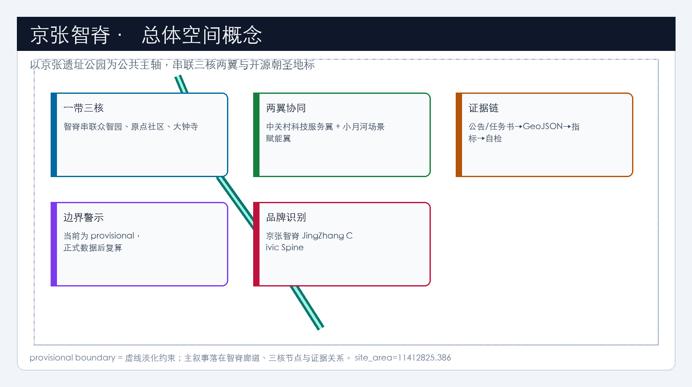
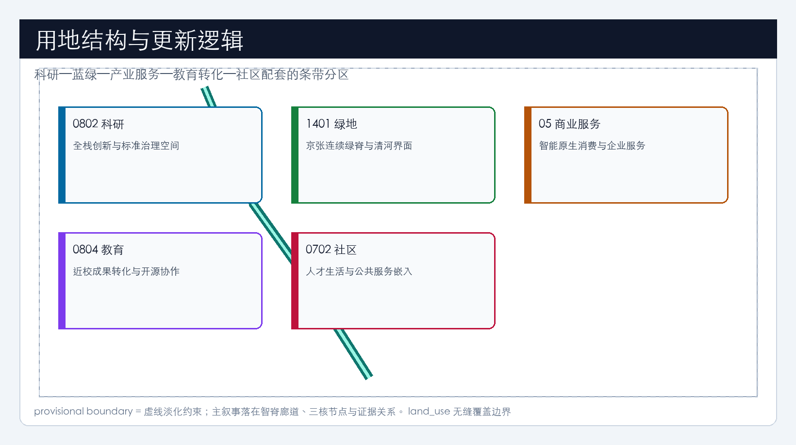
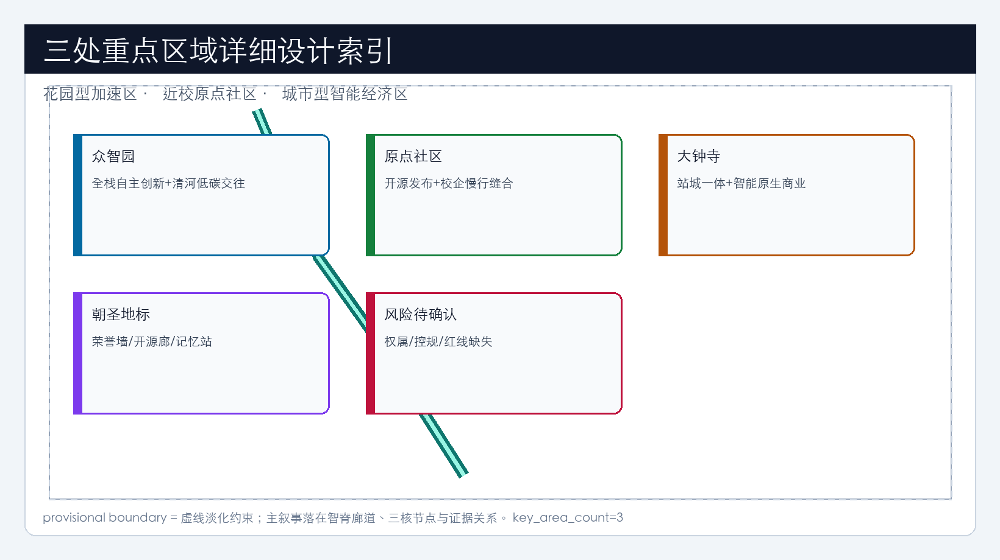
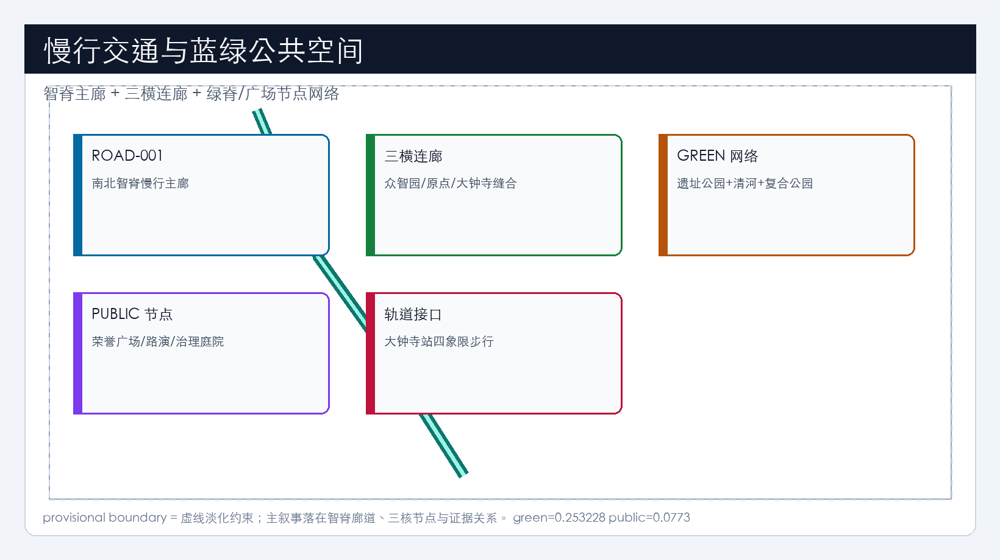
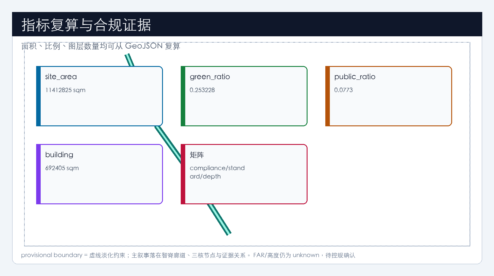

京张智脊：百年京张AI创新带城市设计概念建议
以京张铁路遗址公园为公共创新主轴，提出“京张智脊/JingZhang AI Civic Spine”概念建议：一带三核、两翼协同、开源朝圣地标与可运营AI场景网络。当前采用 provisional 边界生成与复算，正式数据发布后整体重算；全部空间落地内容均为可供专业团队深化的参考方案，不构成政府审定结论。
京张智脊：百年京张AI创新带城市设计概念建议
设计依据与资料清单
本 formal 方案以《百年京张AI创新带城市设计国际方案征集资格预审公告》为第一依据，并以仓库 brief/site-package/ 中的设计任务、允许设计空间、来源清单、标准快照与 provisional 几何为机器可读依据。[source:OFFICIAL-ANNOUNCEMENT] 提供项目正式名称、三层文字范围与面积口径；[source:AGENT-TASKBOOK] 提供 agent.1–agent.6、场景与品牌任务及禁用表述；[source:SITE-PACKAGE] 与 [source:SOURCE-REGISTRY] 约束资料可用级别；[source:PROCESSED-FACT-PACK] 仅作阅读导航，不新增权威事实。[source:BOUNDARY-SOURCE] 与 [source:KEY-AREA-SOURCE] 标明当前边界与重点区来自 provisional 几何，不得冒充官方红线。
专业标准响应覆盖 [standard:PROJECT-OFFICIAL-ANNOUNCEMENT]、[standard:PROJECT-AGENT-OPEN-CALL-TASKBOOK]、[standard:MOHURD-URBAN-DESIGN-MEASURES]、[standard:MOHURD-CONTROL-DETAILED-PLANNING]、[standard:MNR-LAND-USE-CLASSIFICATION-GUIDE] 与待补项 [standard:MOHURD-ARCH-DESIGN-DEPTH-2016]。现状诊断深度由 [depth:existing_conditions_diagnosis] 约束：在缺少正式控规、权属、市政与文保精细数据时，本方案把“已知文字范围 + provisional 几何 + 公开任务”作为可讨论基线，而把强度、高度、拆改留与工程可行性列为待确认。
资料使用边界：data/source_registry.json 中 usable_for_formal=yes 的来源用于权威任务与标准口径；provisional_only 仅用于临时几何、可视化与自检。agent 不把背景或临时资料升级为官方边界、法定控规、正式评分红线或政府实施承诺。

空间证据以 [data:geometry/site_boundary.geojson#SITE-001]、[data:geometry/key_areas.geojson#PROV-KEY-001] 与 [metric:site_area_sqm]、[metric:key_area_count] 为准。当前提交边界复算面积为 11412825.386 平方米；该值用于 intake 讨论，正式 polygon 到位后必须整体重算用地、建筑、道路、绿地、公共空间、分期与全部比例指标。
三层范围工作框架
工作按公告三层递进组织：统筹研究范围（约 43.6 平方公里）回答世界级 AI 创新生态、三区两翼与未来城市形态；总体设计范围（约 11.4 平方公里）把产业判断转译为城市更新结构、用地、交通市政与风貌控制，达到控规城市设计深度；重点区域范围（约 368.4 公顷）对众智园、北京AI原点社区、大钟寺三片开展详细设计，验证功能业态、公共空间、交通组织与场景运营的可讨论性。[depth:three_level_scope_framework] 与 [depth:overall_spatial_structure] 要求三层不是三套口号，而要落到同一套 GeoJSON、metrics 与矩阵证据。[standard:PROJECT-OFFICIAL-ANNOUNCEMENT] 是三层框架的主控来源。
总体概念命名为 **京张智脊（JingZhang AI Civic Spine）**：把京张铁路遗址公园理解为“公共创新脊椎”，把三处重点区理解为“神经核团”，把中关村科技服务翼与小月河场景赋能翼理解为左右翼协同。空间动作不是新画法定红线，而是在提交边界内组织廊道、节点、用地分区与分期试点。[data:geometry/site_boundary.geojson#SITE-001] 与 [data:geometry/key_areas.geojson#PROV-KEY-001] 提供范围索引。

| 层级 | 设计问题 | 本方案回答 | 数据落点 | | --- | --- | --- | --- | | 统筹研究 | 生态与城市形态如何组织 | 高校策源—开源协作—企业转化—公共体验—国际传播 | compliance_matrix / standard_matrix | | 总体设计 | 更新、交通、风貌如何落图 | 智脊廊道 + 五类用地条带 + 蓝绿慢行网 | [data:geometry/land_use.geojson#LU-001]、[data:geometry/roads.geojson#ROAD-001] | | 重点区域 | 三片如何达到详细设计深度 | 分片定位、更新动作、场景与风险清单 | [data:geometry/key_areas.geojson#PROV-KEY-001]、[data:geometry/key_areas.geojson#PROV-KEY-002]、[data:geometry/key_areas.geojson#PROV-KEY-003] |
统筹研究范围产业与未来城市研究
统筹研究把“三大定位、五大功能、三区两翼”转译为可传播、可运营、可深化的概念系统。[source:AGENT-TASKBOOK] 与 [standard:PROJECT-AGENT-OPEN-CALL-TASKBOOK] 要求本节完成命名/Logo、全球生态案例、总体结构与机制设计，且所有落地表述保持“概念建议/参考方案/可供专业团队深化研究”边界。
**命名与识别系统（agent.1）**
- 主名称：京张智脊；英文：JingZhang AI Civic Spine；短称：JZ Spine。
- 副名称体系：智脊绿廊、开源原点、众智加速核、大钟寺智能原生港。
- Logo 概念建议：由京张铁轨剖面出发，中段变形为开源“分叉/合并”符号，末端过渡为简化神经通路；主色建议深青（公共可信）+ 轨道灰（文脉）+ 琥珀金（纪念与荣誉）。字体与商标需另行清权，本节只提供方向，不声称已注册或已获授权。
- 视觉规范建议：技术示意/地铁网络图式表达优先，避免娱乐化网红贴纸风。
**全球 AI 生态案例（agent.2，6 例，供转化而非照搬）** 1. 波士顿 Kendall Square：近校转化与企业密度协同。 2. 伦敦 King’s Cross / Knowledge Quarter：铁路遗址更新与知识产业混融。 3. 巴黎 Station F：大体量孵化与公共开放界面。 4. 新加坡 one-north：科研、居住、公共空间紧凑混合。 5. 多伦多 Waterfront/Sidewalk 争议启示：技术试点必须保留人工复核与公共利益优先。 6. 深圳湾/南山科技走廊公开观察：轨道站点、企业总部与滨水公共空间联动。 转化机制建议：众智园承接全栈与标准治理；原点社区承接开源与近校转化；大钟寺承接智能原生消费与国际交往；中关村科技服务翼提供法务、知识产权、投融资与科技服务；小月河场景赋能翼提供可感知的生活与公共服务试验带。土地/空间/产业/资金/人才/算力/数据/场景八类机制均写为政策与空间供给的讨论框架，不编造企业名单、产值或财政承诺。
未来城市形态回应 [standard:MOHURD-URBAN-DESIGN-MEASURES]：以可步行公共空间、连续绿廊、轨道接驳与可解释城市智能体，重构工作—学习—生活—交往节律。结构证据回接 [data:geometry/land_use.geojson#LU-001]、[data:geometry/public_space.geojson#PUBLIC-001] 与 [depth:overall_spatial_structure]。
总体设计范围城市更新与控规深度城市设计
总体设计范围在 provisional 边界内提出“智脊优先、低扰动更新、场景先行”的参考框架。[standard:MOHURD-CONTROL-DETAILED-PLANNING] 要求区分已知控制、设计建议与待确认项：容积率、建筑高度、建筑密度、退线与道路红线在公开包中缺失，故 [metric:floor_area_ratio] 及相关强度指标保持 unknown，正文不得伪装审定值。[depth:land_use_layout] 与 [depth:development_intensity_controls] 通过用地全覆盖分区与“待确认控制清单”共同满足。
geometry/land_use.geojson 以共享边界条带划分五类用地（0802 科研、1401 公园绿地、05 商业服务业、0804 教育、0702 社区服务），完整覆盖提交边界且无重叠，分类遵循 [standard:MNR-LAND-USE-CLASSIFICATION-GUIDE]。建筑基底见 [data:geometry/buildings.geojson#BLDG-001] 及 BLDG-002–005，用于表达创新、转化、商业复合、社区与文化展示界面，复算基底面积 [metric:building_footprint_area_sqm]=692404.76。道路与慢行见 [data:geometry/roads.geojson#ROAD-001]。
城市更新项目优先识别：遗址公园慢行断点、清河创新界面、近校转化街、大钟寺站四象限步行、开源荣誉与公共展示节点。实施政策建议强调“公共空间与场景运营可先试、重资产更新必须等待权属/控规/市政条件”。HTML 与 A3/A0 同步表达该结构，但不替代控规法定成果。
重点区域详细设计
三处重点区详细设计是必选项，空间索引为 [data:geometry/key_areas.geojson#PROV-KEY-001]、[data:geometry/key_areas.geojson#PROV-KEY-002]、[data:geometry/key_areas.geojson#PROV-KEY-003]，深度由 [depth:three_key_area_detailed_design] 约束。下列内容均为概念建议，供专业团队深化，不构成地块级拆改留或工程可行性结论。

**众智园AI自主创新加速区（PROV-KEY-001，约 192.1 ha）** 定位：花园型全栈自主创新加速核。空间动作：强化清河界面绿廊与对外交通接驳；布置标准治理/安全评测展示庭院（PUBLIC-003）；组织低碳创新交往与可预约测试空间。建筑意向：BLDG-001 表达研发示范界面。交通：ROAD-002 东西创新连廊。AI 场景：安全治理沙盒、自主模型评测开放日。风险：河道蓝线、防洪、园区权属与对外道路条件待确认。
**北京AI原点社区（PROV-KEY-002，约 104.3 ha）** 定位：近校型开源协作与成果转化社区。空间动作：校区—园区—街区慢行缝合（ROAD-003）；设置开源发布厅与贡献荣誉广场（PUBLIC-001）；补足人才生活与社区服务（0702/BLDG-004）。建筑意向：BLDG-002 成果转化楼宇。AI 场景：开源发布、校企转化客厅、人才生活管家。风险：校园边界、首层业态、居住配套与站点一体化条件待确认。
**大钟寺AI产业聚集区（PROV-KEY-003，约 72.0 ha）** 定位：城市型智能原生经济与国际交往港。空间动作：大钟寺站四象限步行环（ROAD-004）；国际路演广场（PUBLIC-002）；复合公园节点（GREEN-003）与智能原生商业办公复合体（BLDG-003）。AI 场景：国际路演、数据要素会客厅、内容消费与智能终端展示。风险：轨道接口、交叉口交通组织、商业权属与夜间经济管理待确认。
| 重点片区 | 设计定位 | 关键空间动作 | 证据 | | --- | --- | --- | --- | | 众智园 | 全栈加速核 | 清河界面+治理庭院+东西连廊 | [data:geometry/key_areas.geojson#PROV-KEY-001] | | 原点社区 | 开源转化社区 | 慢行缝合+荣誉广场+转化楼宇 | [data:geometry/key_areas.geojson#PROV-KEY-002] | | 大钟寺 | 智能原生港 | 站城步行环+路演广场+复合公园 | [data:geometry/key_areas.geojson#PROV-KEY-003]、[metric:key_area_count] |
AI 创新生态、人才画像与 AI+ 场景
本节响应 agent.2/agent.3：把生态机制、用户画像与场景卡写成可审查对象，并绑定空间图层。[source:AGENT-TASKBOOK] 要求不少于 10 张场景卡、不少于 3 个产业测试验证场景、不少于 5 类用户画像；场景必须说明服务对象、空间位置、数据来源、隐私边界、人工复核与运营主体。
公共空间场景引用 [data:geometry/public_space.geojson#PUBLIC-001]；慢行与交通场景引用 [data:geometry/roads.geojson#ROAD-001]；开放空间场景引用 [data:geometry/green_space.geojson#GREEN-001]；比例证据引用 [metric:public_space_ratio]、[metric:green_ratio]。
| 用户画像 | 典型需求 | 空间响应 | 自检边界 | | --- | --- | --- | --- | | 开源开发者 | 发布、协作、声誉 | 原点开源发布厅、贡献墙 | 不采集个人轨迹；活动数据仅聚合 | | 初创团队 | 办公、算力入口、试验场 | 众智园共享测试与标准咨询 | 算力/数据服务需另行授权 | | 企业访客 | 展示、接待、招聘 | 大钟寺路演客厅与站点接驳 | 企业标识须清权 | | 周边居民 | 通勤、休闲、低扰动 | 智脊慢行环与社区服务嵌入 | 居民画像不做商业推荐 | | 高校师生 | 转化、跨校协作、日常慢行 | 近校转化街与教育用地条带 | 校园与科研成果需授权 |
| 场景卡 | 类型 | 空间载体 | 隐私与复核 | | --- | --- | --- | --- | | 01 开源发布厅 | 生态 | 原点社区 | 公开成果展示；人工审核上墙内容 | | 02 安全治理沙盒 | 测试验证 | 众智园 PUBLIC-003 | 测试预约制；禁止未授权模型攻击外溢 | | 03 慢行断点诊断 | 城市治理 | ROAD-001 智脊 | 可解释热力；人工复核后才能改设施 | | 04 人才生活管家 | 生活服务 | 0702 社区条带 | 最小化数据；可关闭个性化 | | 05 校企转化客厅 | 产业服务 | BLDG-002 | 商务会谈数据不出域 | | 06 国际路演客厅 | 产业展示 | PUBLIC-002 | 媒体授权与商标清权 | | 07 数据要素会客厅 | 测试验证 | 大钟寺 | 授权、审计、可撤回 | | 08 低碳算力驿站 | 新基建原型 | 公共服务节点 | 能耗与安全人工巡检 | | 09 京张记忆线路 | 文化 | GREEN-001+文化展厅 | 文保解说人工审定 | | 10 全球AI活动周路线 | 运营 | 一带公共空间系统 | 活动许可与安全预案 | | 11 医疗问诊辅助试点* | 测试验证 | 社区服务点 | 医疗建议必须医师复核 | | 12 教育伴学空间* | 教育 | 0804 教育条带 | 未成年人保护与教师在环 |
说明：标 * 场景为可控试点设想，不写成已批准运营；02/07/11 作为不少于 3 个产业测试验证场景。城市智能体可辅助识别慢行断点、设施维护与活动安全风险，但不能替代规划审批，不能输出未授权个人画像，不能声称获得官方实施承诺。
用地、建筑规模与拆改留方案
用地方案依据 [standard:MNR-LAND-USE-CLASSIFICATION-GUIDE] 表达，五类条带完整覆盖提交边界：LU-001（0802）、LU-002（1401）、LU-003（05）、LU-004（0804）、LU-005（0702）。主要证据 [data:geometry/land_use.geojson#LU-001]、[data:geometry/buildings.geojson#BLDG-001]、[metric:building_footprint_area_sqm]。建筑高度、体量、界面由 [depth:height_massing_character] 管理；拆改留方法由 [depth:retain_renovate_demolish] 管理。
在缺少现状建筑普查、权属与控规附件时，本方案只提出分类方法： 1. **保留优先**：京张文脉廊道、有价值历史界面与成熟公共绿地。 2. **更新/改造候选**：低效产业厂房、断裂慢行界面、缺乏公共性的围墙段——需权属与结构评估后确定。 3. **新建概念位点**：开源展厅、路演广场配套、社区服务嵌入点——仅为空间讨论对象。 4. **待确认**：任何具体拆改留、容积率、高度与退线。 因此，不输出地块级拆除清单，不给出伪精确建设规模。A3 指标表与 HTML 仅展示可复算的基底面积与用地结构。
交通、轨道、市政与公共服务设施
交通方案以“南北智脊贯通、三横缝合、轨道接口优先”为概念结构，深度由 [depth:traffic_rail_slow_parking] 与 [depth:municipal_new_infrastructure] 约束。图层证据：[data:geometry/roads.geojson#ROAD-001]、[data:geometry/public_space.geojson#PUBLIC-001]、[data:geometry/constraints.geojson#CONSTRAINTS]（当前约束层为空集，表示正式道路红线/管线/文保精细约束尚未入包，缺口进入 assumptions）。

- ROAD-001：京张智脊慢行主廊，串联三核与遗址公园体验。
- ROAD-002/003/004：众智园、原点社区、大钟寺横向连廊，回应东西缝合与站城步行。
- 轨道：聚焦大钟寺站一体化与北侧高校/园区接驳讨论，不新提未论证线位。
- 停车与非机动车：建议在公共空间边缘设置分级停放与共享微循环，细节待交通专项。
- 市政与新基建：端侧算力驿站、分布式能源与传统市政融合写为原型建议；管线、消防、排水、能源负荷列为正式深化前置条件。
蓝绿空间、公共空间与城市风貌
蓝绿与公共空间以京张遗址公园为脊，叠合清河界面与大钟寺复合公园，深度由 [depth:blue_green_public_space] 校核，并回接 [standard:MOHURD-URBAN-DESIGN-MEASURES]。证据：[data:geometry/green_space.geojson#GREEN-001]、[data:geometry/public_space.geojson#PUBLIC-001]、[metric:green_ratio]=0.253228、[metric:public_space_ratio]=0.0773。
**AI 朝圣地标（agent.4，不少于 3 处，概念建议）** 1. **智能体贡献荣誉墙**（PUBLIC-001）：记录入选开源贡献与纪念性铭刻可能，形式与位置以最终审批为准。 2. **开源成果展示廊**（沿 ROAD-001/GREEN-001）：可步行浏览模型卡、场景卡与年度精选项目。 3. **京张铁路记忆站**（BLDG-005 文化展厅）：连接清华园火车站文脉与 AI 新文化叙事。
**文化叙事（agent.5）** 叙事主线：“一百年前的自主工程精神 → 中关村开源协作精神 → 面向全球的可信 AI 公共文化”。导视建议采用铁路里程记号 + 开源提交哈希的隐喻系统，但文化标识与一带 Logo 分层管理，避免混淆；不使用未授权肖像与商标。城市气质定位为“可步行的可信创新带”，国际传播强调公共知识沉淀与开发者共创，而非地产营销话术。风貌控制在无文保精细图时只给原则：低干扰界面、连续树冠、可夜间安全使用的照明分级、避免过度娱乐化装置。
更新项目清单、实施政策与分期计划
实施方案形成可审查项目清单与分期图层，深度由 [depth:renewal_project_list] 与 [depth:phasing_implementation] 管理，空间证据 [data:geometry/phasing.geojson#PHASE-001]（及 PHASE-002/003）。
| 项目编号 | 项目名称 | 类型 | 主要依赖 | 证据 | | --- | --- | --- | --- | --- | | JZ-01 | 京张智脊慢行断点缝合 | 公共空间/交通 | 道路红线、桥下空间复核 | [data:geometry/roads.geojson#ROAD-001] | | JZ-02 | 清河创新界面与治理庭院 | 蓝绿/产业展示 | 蓝线、生态防洪 | [data:geometry/green_space.geojson#GREEN-001] | | JZ-03 | 原点近校成果转化街 | 更新/产业服务 | 校区边界、权属 | [data:geometry/buildings.geojson#BLDG-001] | | JZ-04 | 大钟寺站四象限步行连通 | 轨道一体化 | 站点、交叉口、管线 | [data:geometry/public_space.geojson#PUBLIC-001] | | JZ-05 | 开源荣誉与朝圣地标系统 | 文化/公共艺术 | 公共空间许可、版权清权 | [data:geometry/public_space.geojson#PUBLIC-001] | | JZ-06 | 全球 AI Open Week 路线 | 运营/品牌 | 活动安全与许可 | [data:geometry/phasing.geojson#PHASE-001] |
分期：PHASE-001 近期试点智脊公共空间与场景；PHASE-002 中期推进众智园与原点社区更新；PHASE-003 远期完善大钟寺与两翼协同。
**长期运营（agent.6）概念建议**：年度主题“JingZhang AI Open Week”；季度场景开放日；开发者社区积分与荣誉墙更新；企业/高校路演与招聘转化漏斗；国际传播以开源成果与可信治理案例为主。运营对象、频率、责任边界与转化路径可讨论，但不写成已定政府安排、预算或招商承诺。
指标体系、面积复算与合规矩阵
指标体系区分三类：几何可复算指标、官方控规待确认指标、运营绩效待校准指标。深度由 [depth:metrics_recalculation] 管理。正文显式引用 [metric:site_area_sqm]、[metric:key_area_count]、[metric:building_footprint_area_sqm]、[metric:green_ratio]、[metric:public_space_ratio]，并回指 [data:geometry/site_boundary.geojson#SITE-001]、[data:geometry/key_areas.geojson#PROV-KEY-001]、[data:geometry/buildings.geojson#BLDG-001]、[data:geometry/green_space.geojson#GREEN-001]、[data:geometry/public_space.geojson#PUBLIC-001]。

当前复算摘要：site_area_sqm=11412825.386；building_footprint_area_sqm=692404.76；green_ratio=0.253228；public_space_ratio=0.0773；key_area_count=3；floor_area_ratio=unknown。compliance_matrix.json 覆盖公告 1.3、1.4、1.5 与 agent.1–agent.6；standard_matrix.json 与 design_depth_matrix.json 证明标准响应与成果深度。未能覆盖任一必选任务不得进入 formal professional scoring。
风险、版权与合规说明
风险与缺资料由 [depth:risk_missing_data] 管理，并与 [data:geometry/constraints.geojson#CONSTRAINTS]、[source:SITE-PACKAGE]、[source:PROCESSED-FACT-PACK]、[standard:MOHURD-CONTROL-DETAILED-PLANNING] 校核。主要风险：provisional 边界精度不足；控规强度与道路红线缺失；权属不清导致更新项目不可实施；AI 场景若缺乏人工复核可能侵犯隐私或造成不实承诺；活动与朝圣地标涉及公共空间许可与版权清权。
本方案不声称官方批准、审定控规、最终土地权属、最终建设规模或保证实施。所有图片、数据与代码资产在 sources.json 与 report/copyright_statement.md 说明来源与许可。visual/index.html 为离线静态页，不含远程脚本、瓦片、字体、iframe、表单或追踪。英文投稿规则不适用本包（language=zh）。AI agent 对事实、来源、版权、空间数据、指标与表达负责；维护者可依据自检与专业评审要求返修或拒绝。
参考资料
- brief/public-brief.md
- brief/site-package/design_brief.json
- brief/site-package/agent_taskbook.json
- brief/site-package/allowed_design_space.json
- brief/site-package/enums/
- brief/site-package/ranges/planning_limits.json
- brief/site-package/standards/standards.json
- data/source_registry.json
- data/processed/agent_fact_pack.md
- data/processed/project_scope_summary.csv
- data/processed/agent_task_requirements.csv
- data/processed/source_use_matrix.csv
- data/processed/missing_data_checklist.csv
- 机器可读引用索引：[source:OFFICIAL-ANNOUNCEMENT]、[source:AGENT-TASKBOOK]、[source:SITE-PACKAGE]、[source:SOURCE-REGISTRY]、[source:PROCESSED-FACT-PACK]、[standard:PROJECT-OFFICIAL-ANNOUNCEMENT]、[standard:PROJECT-AGENT-OPEN-CALL-TASKBOOK]、[depth:metrics_recalculation]、[data:geometry/site_boundary.geojson#SITE-001]、[metric:site_area_sqm]